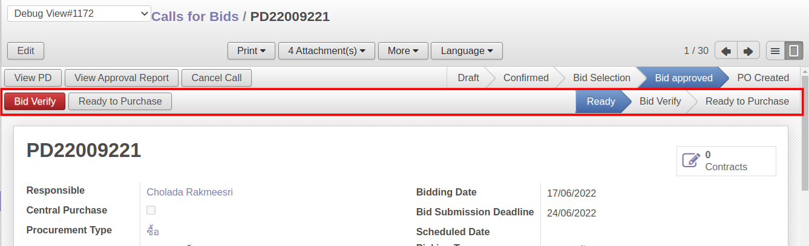
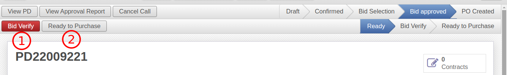
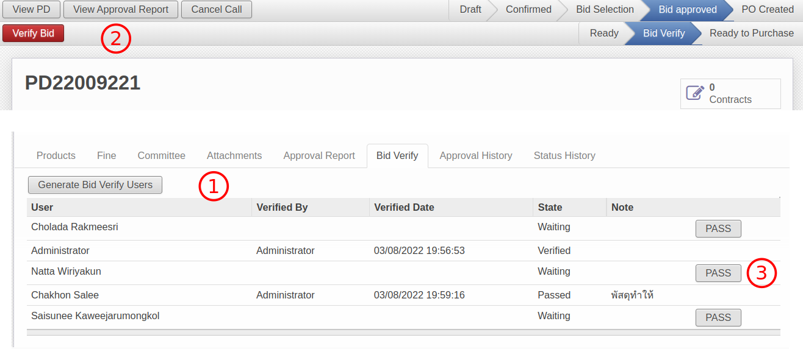
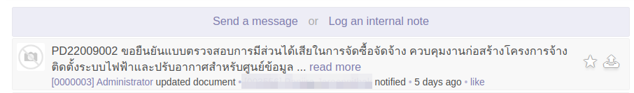
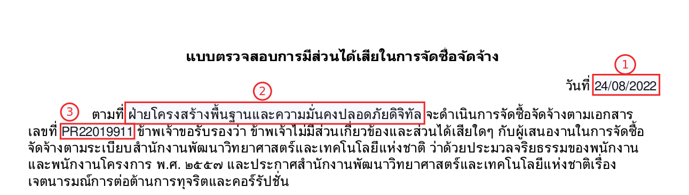
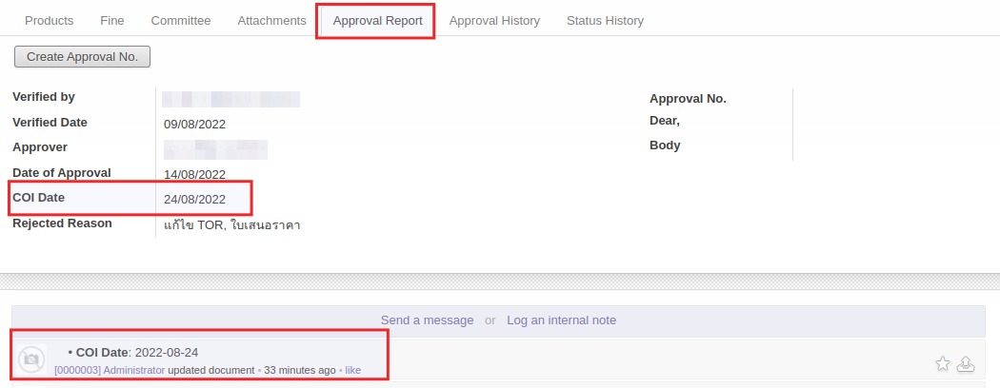
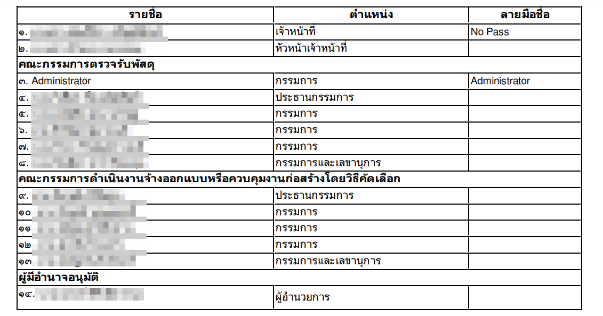

Call for Bid
As-Is
เมื่อสถานะของเอกสาร Call for Bid เปลี่ยนจาก Bid Selection เป็น Bid Approved (โดย AF) เจ้าหน้าที่พัสดุจะทำหน้าที่สร้าง RFQ และสถานะจะเปลี่ยนเป็น PO Created ได้เลยโดยไม่ต้องมีการอนุมัติใด ๆ เพิ่มเติมจากผู้มีส่วนได้เสียในการจัดซื้อ
To-Be
เมื่อสถานะของเอกสารเปลี่ยนเป็น Bid Approved เพิ่มกระบวนการ Verify อีกครั้งหนึ่งจากผู้มีส่วนได้เสียทุกคนก่อนที่เจ้าหน้าที่พัสดุจะสามารถสร้าง RFQ ได้
โดยระบบจะเพิ่มให้มี Sub States ระหว่างสถานะ Bid Approved ดังรูป เพื่อติดตามสถานะของการอนุมัติจากผู้มีส่วนได้เสีย

- Ready: สถานะเริ่มต้นเมื่อ State = Bid Approved
- Bid Verify: เมื่ออยู่ระหว่างการอนุมัติของผู้มีส่วนได้เสีย (ในตาราง tab Bid Verify)
- Ready to Purchase: เมื่อผู้มีส่วนได้เสียทุกคนได้ทำการ Verify
Info
หากไม่ต้องการขั้นตอน Bid Verify เจ้าหน้าที่พัสดุสามารถเลี่ยงได้โดยกดปุ่ม Ready to Purchase โดยระบบจะ bypass Bid Verify ไปเลย และสามารถสร้าง RFQ ต่อได้ทันทีเหมือนการทำงานเดิม
Substate: Ready
เมื่อ State = Bid Approved, Substate จะเปลี่ยนเป็น Ready โดยอัตโนมัติ

โดยจะมี 2 ทางเลือกสำหรับเจ้าหน้าที่พัสดุ
- Bid Verify เพื่อเข้ากระนวนการ verify โดยผู้มีส่วนได้เสีย
- Ready to Purchase เพื่อข้ามขั้นตอนนี้ และทำงานตามปกติ
Substate: Bid Verify
เมื่อสถานะเปลี่ยนเป็น Bid Verify สิง่ที่ระบบจะดำเนินการคือ
- สร้างตารางผู้มีส่วนได้เสีย (Bid Verify Users)
- ส่ง Intray Message เพื่อแจ้งเตือนผู้มีส่วนได้เสีย
- แบบฟอร์ม ผู้มีส่วนได้เสีย
สร้างตารางผู้มีส่วนได้เสีย
ผู้มีส่วนได้เสียจะนำมาจาก Responsible, Verified By, Approver และ Users จาก Committee tab

- Bid Verify tab นี้จะแสดงเฉพาะกรณีที่มีตารางผู้มีส่วนได้เสียเท่านั้น
- กรณีข้ามขั้นตอน จะไม่มีการสร้างตารางนี้ และไม่ต้องแสดง
- เจ้าหน้าที่พัสดุสามารถกดปุ่ม Generate Bid Verify Users ได้กรณีต้องการลบสร้างใหม่
- เมื่อผู้มีส่วนได้เสีย Login เข้ามาในระบบ จะกดปุ่ม Verify เพื่อยืนยัน (สถานะ verified)
- กรณีที่ไม่มายืนยัน เจ้าหน้าที่พัสดุสามารถทำแทนได้โดยกดปุ่ม PASS พร้อมเหตุผล (สถานะ Passed)
ส่ง Intray Message เพื่อแจ้งเตือนผู้มีส่วนได้เสีย
ข้อความแจ้งเตือนจะส่งให้ 4 กลุ่ม
- เจ้าหน้าที่พัสดุ (Responsible)
- หัวหน้าเจ้าหน้าที่พัสดุ (Verified by)
- คณะกรรมการ (Committee)
- ผู้มีอำนาจอนุมัติ (PR. Approver)
โดยรูปแบบข้อความจะเป็น
<เลขที่เอกสาร Call for Bid> ขอยืนยันแบบตรวจสอบการมีส่วนได้เสียในการจัดซื้อจัดจ้าง <วัตถุประสงค์> ของ <ชื่อผู้มีส่วนได้เสียของแต่ละคน>
ตัวอย่าง

แบบฟอร์ม ผู้มีส่วนได้เสีย (Conflict of interest Report)
ฟอร์มผู้มีส่วนได้เสีย: Print > Conflict of interest Report
รูปแบบฟอร์มผู้มีส่วนได้เสียอยู่ที่แบ่งเป็น 3 ส่วน
-
ข้อความหลัก 
-
(1) วันที่ (COI Date)
- เลือกวันที่เองได้ที่ Approval Report Tab
- สามารถเปลี่ยนวันที่ได้ทุกสถานะ แต่จะมีการเก็บ Log ไว้ด้านล่าง 
-
(2) ฝ่าย (Division) ที่เกี่ยวข้องกับเอกสาร PR ของ Budget นั้นๆ กรณีที่มีมากกว่า 1 ฝ่าย จะแสดงทุกฝ่ายโดยเชื่อมด้วยคำว่า "และ"
- (3) เลขที่เอกสาร PR ของ Call for Bid นั้นๆ กรณีที่มีมากกว่า 1 PR ให้แสดงทุกเลขที่เอกสาร โดยเชื่อมด้วย "," (comma)
-
-
ตารางผู้มีส่วนได้เสีย 
- รายชื่อผู้มีส่วนได้เสีย จะแบ่งเป็น 4 กลุ่ม
- เจ้าหน้าที่พัสดุ: Responsible
- หัวหน้าเจ้าหน้าที่พัสดุ: Verified by ใน "Approval Report" Tab
- คณะกรรมการ: "Committee" Tab โดยแยกตามประเภทคณะกรรมการ
- ผู้มีอำนาจอนุมัติ: PR. Approver
- ตำแหน่ง
- คณะกรรมการ: ดึงข้อมูลจาก Position ในตาราง Committee
- ผู้มีอำนาจอนุมัติ: ดึงข้อมูลจาก Management Position ในข้อมูล Employee ของคนนั้นๆ ถ้าไม่มีจะดึงข้อมูลจาก Position แทน
- ลายมือชื่อ
- กรณีที่ผู้ที่มีรายชื่อกด Verify - แสดงรายชื่อ
- กรณีที่พัสดุกด PASS - แสดงเหตุผล
- กรณีที่ยังไม่มีการอนุมัติ - แสดงค่าว่าง
- รายชื่อผู้มีส่วนได้เสีย จะแบ่งเป็น 4 กลุ่ม
-
หมายเหตุประกอบ
หมายเหตุเพิ่มเติม
Note
- ปกติผู้มีส่วนได้เสียไม่มีสิทธิ์เห็น Call for Bid แต่กรณนี้เมื่อได้รับ Intray Message จะคลิก link เพื่อเข้ามาเปิดเอกสาร ดังนั้นระบบต้องเพิ่ม security rule ให้ด้วย
- หาก substate != Ready to Purchase และไม่ใช่กรณี bypass ระบบต้องไม่ยอมให้มีการเปลี่ยน state เป็น PO Created (โดยการสร้าง RFQ)